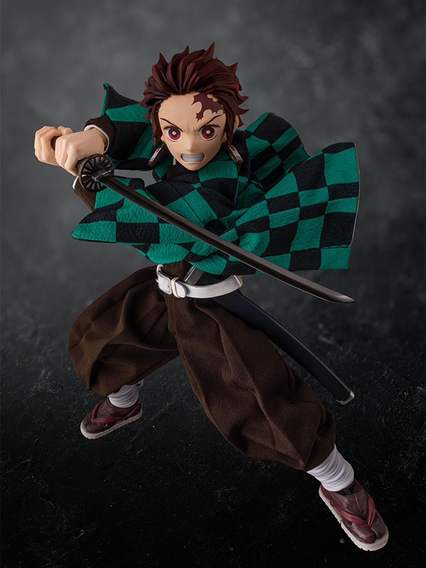
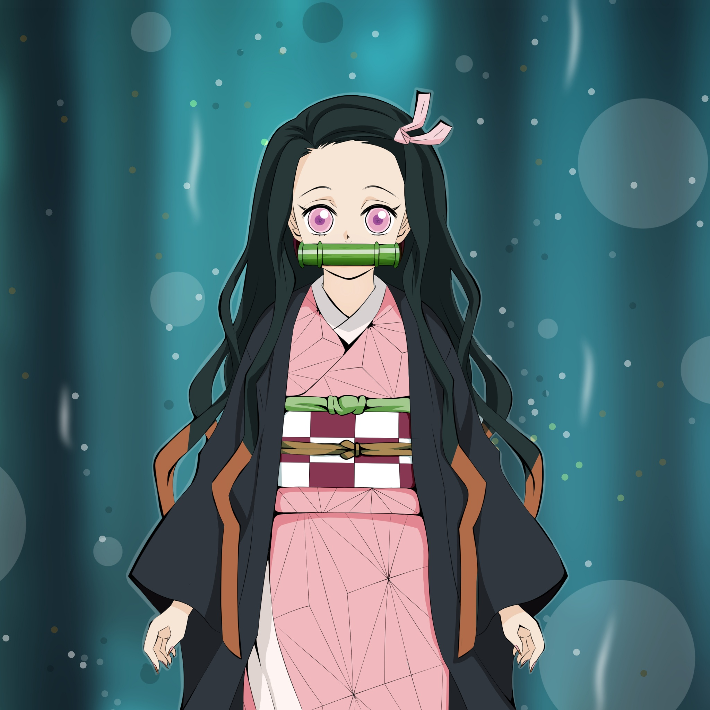
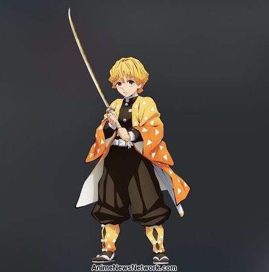

style="color:dimgrey;"> Demon Slayer in the Demon Slayer Corps, who joined to find a remedy to turn his sister, Nezuko Kamado, back into a human and to hunt down and kill demons, and later swore to defeat Muzan Kibutsuji the King of Demons, in order to prevent others from suffering the same fate as him.Tanjiro Kamado is the main protagonist of the anime/manga series Demon Slayer: Kimetsu no Yaiba
Nezuko is a petite young girl with fair skin, visibly large, prominent fangs, and sharp, stiletto nails with a base color of light pink and ombre fading to a red-pinkish color at the end where they point. Nezuko's Blood Demon Art allows her to generate and manipulate special demonic flames created from her blood that are pinkish in color.
Zenitsu is a powerful Demon Slayer and a member of the Demon Slayer Corps. Although he was originally roped into joining the Corps by his mentor Jigoro Kuwajima, Zenitsu later realizes the importance of the Demon Slayer Corps.Zenitsu is cowardly, weak-willed, and anxious, often claiming that he doesn't have long to live due to the dangerous job of being a Demon Slayer.
